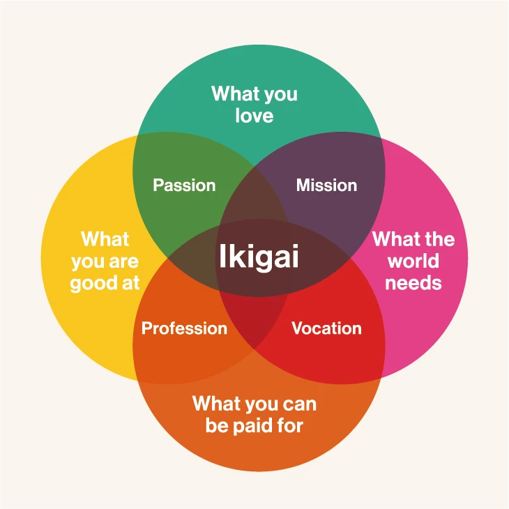

About the Author
Ken Mogi is a neuroscientist and has a Ph.D. in physics from the University of Tokyo. Ken works at the Sony Research Laboratory, teaches at several universities, and travels abroad to give lectures on concepts such as ikigai and the brain. He has also authored over 100 books, including The Little Book of Ikigai.
Other Works by Ken Mogi
Awakening Your Ikigai

The Way of Nagomi
Think Like a Stoic
ikigai
The Secret Japanese Way to Live a Happy and Long Life
The Japanese word ikigai, which has recently gained attention worldwide and enjoys widespread use, refers to a passion that gives value and joy to life. The author who prompted its craze speaks about the word’s appeal and the effects it has on mental and physical health.
The Ikigai Diagram
Find Your Ikigai
The Five Pillars of Ikigai
Japanese people do understand that there is no way to attain perfection, but they still appreciate the effort that one nevertheless puts in to always striving to be better. The important thing is the process -- trying to attain their goal and learning from their attempts to do so.
Releasing yourself is about finding happiness through acceptance. Ken shares that he, himself, found it hard to accept himself since he used to be the “nerd”. However, at the end of the day, he realized that he wouldn’t want to be anybody else, and wouldn't trade places with others -- which is what others can achieve as well; each person has his/her discrete views about life and what they want to be in the future.
If people could think beyond their selfish needs, it would create harmony and sustainability. Ken believes that harmony and sustainability are one of the best-kept principles of Japanese society: Japanese people are known for not speaking out and not taking any different positions.
Ken proposes starting the day with some ikigai and getting into the habit of using the little things to create pleasurable, rewarding experiences that facilitate contentment. With these embedded in one’s routine, it doesn’t matter if people get recognized for their performance; no matter what, they have still experienced moments of happiness.
The fifth pillar is “being in the here and now”. According to Ken, children value the present because they have no definite idea of the past or future, so to be present helps people to bring out their inner child. Bringing out people’s inner child in the era of information technology is a successful attitude that people can take in; it’s a key attribute when they want to bring happiness to their lives and those of their loved ones.
What People Are Saying
"as the title suggests this is a short book on ikigai but concise and to the point. it is perhaps better appreciated if you have some knowledge of eastern philosophical thoughts. if nothing else it gave me some insights into the Japanese mindset. as the author alludes if language of a culture is a window into that culture then it is important that the word ikigai exists. for our thoughts become our words and our words manifests as actions which subsequently form our traditions."
Virtual Alibi
"The book is not going to turn your life around in a day. Its teachings need to be applied gradually. Appreciate yourself but not inflate your ego, take pleasure in small things and find harmony in them, appreciate the present and live it to the fullest. Sushi masters, manga artists, craftsmen and their source of ikigai are all in this book. I am sure you will find yours too"
Neville Andrade
"Great little book on Japanese Ikigai and its simple philosophy and principles. Very thought provoking and stimulating read. Gets you to reflect on life, the meaning of contentment and what is important in life. Very illuminating and easy to read."
Clive Stocks